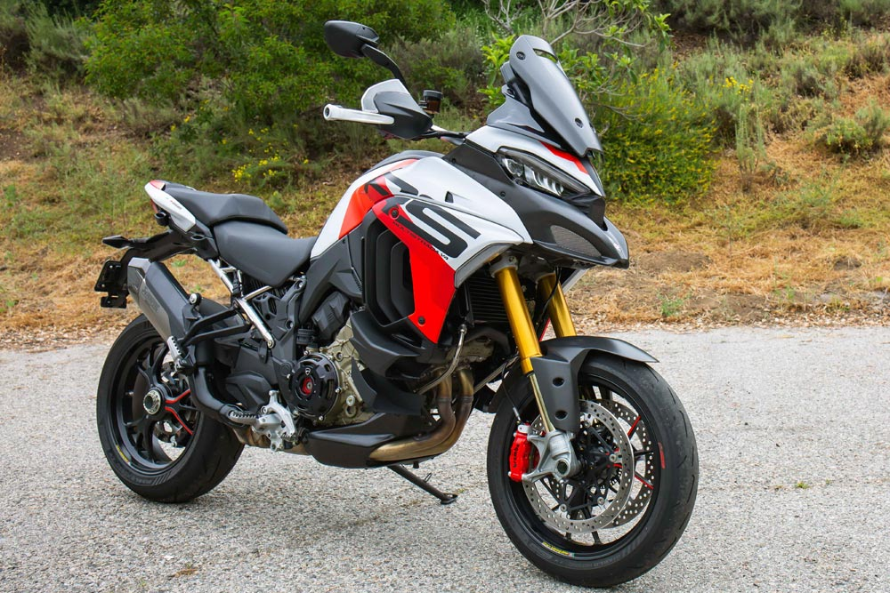

Ducati Multistrada V4
Avaldatud: 09.05.2025

Testimiskoht: Lahemaa rahvuspargi kurvilised asfaltteed.
Mis meeldis?
- Võimas ja rafineeritud V4 mootor – väga sujuv ja kiire reageerimine.
- Luksuslik varustus: soojendusega sadul, adaptiivne püsikiiruse hoidja.
- Sportliku mootorratta tunnetus kombineeritud matkamugavusega.
- Silmapaistev välimus ja kvaliteetsed viimistlusdetailid.
Mis ei meeldinud?
- Sportlik istmeasend võib olla pikematel sõitudel väsitav.
- Komplitseeritud elektroonika seadistamine esmakasutajale.
Ducati Multistrada V4 on kui luksusauto kaherattalisel kujul. See on masin, mis sobib hästi kogenud matkajale, kes otsib võimsust ja tipptehnoloogiat. Lahemaa teedel pakkus ta palju sõidurõõmu!
Märksõnad: Ducati, Multistrada, V4, luksus, touring, proovisõit, Lahemaa